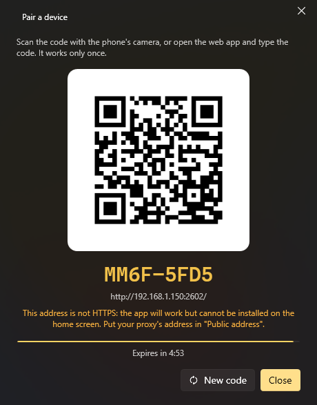

Phone and remote control
Web app (phone, tablet, any browser)
Settings → Web app turns on a small web server on your PC (port 2502 by default). From a phone on the same network you get your commands and menus, the volume and the audio output, a touchpad and keyboard, voice orders and the assistants' chat. It can be installed on the phone as an app (PWA).

- Turn on Web server.
- Pair a device: scan the QR code with the phone (or open the link it shows).
- That is it: the device stays paired until you revoke it in Paired devices.
The tabs of the app (Settings opens from the button at the top right):
| Tab | What it has |
|---|---|
| Commands | Every command marked Available for remote control, as rows with what it does, its hotkey and where it works. Search, filters by QuickMenu, Favorites and the most used at the top, and Events (the ones fired by name). The result shows on the row itself (✓ or ✕) |
| Menus | Your QuickMenus drawn like on the PC: a tap runs and goes back to the first level, holding runs and keeps the menu where it is |
| Touchpad | Move the mouse, click, scroll and type on the PC (only with Touchpad and keyboard on) |
| Media | What plays on the PC (cover, title, progress and its buttons), the volume, the Volume by app and the audio output |
| Assistant | The chat with the assistants, written or spoken (only with the assistant module on) |
Notes:
- Nothing works until a device is paired, even from the same PC.
- Listening on the network needs K-Desktop to run as administrator (as it does by default); otherwise the server only answers this PC.
- Internet address is optional, only if you come in from outside through a reverse proxy.
- Accept orders from says where it can be reached from: This PC only, Local network or Internet (what comes through the proxy counts as internet). Pairing is always needed.
Holding a command opens its sheet: what it does, all its hotkeys and apps, Favorite, Ask first (it asks before running it from this phone) and Run. Favorites and Ask first are kept per PC.
The touchpad
One finger moves, a tap clicks, tap and drag (or hold) drags, two fingers scroll, and a two- or three-finger tap is a right or middle click. With Three- and four-finger gestures, like a Windows touchpad: three fingers sideways switch windows, up opens the task view and down shows the desktop; four fingers sideways go to the next virtual desktop. Pinch to zoom zooms in and out like Ctrl + wheel. With the phone on its side the touchpad takes the whole screen. In Settings you can also change the speed, the Acceleration and which Special keys show and in which order. These settings are kept per PC.
What plays and the volume
Media shows what each program tells Windows it is playing (Spotify, browsers, the Media Player…) with its cover, the progress bar (to move to another point when the player allows it) and its buttons; with several, chips to pick one. Below: the PC's volume, Volume by app (each program with sound, like Windows' volume mixer) and the audio output. In the Android app, What plays, in the notifications shows it as a media notification (also on the lock screen) and the phone's volume keys change the PC's volume while it is there.
The assistants on the phone
An order written or said on the phone can be answered there: in Settings, Answers play On this phone, On the PC or On both. The PC sends the voice sentence by sentence as it is ready; with On this phone the character on the PC moves its mouth in silence. Keep listening opens the microphone again when it finishes answering. Under each answer, what it did shows as chips («✓ Opened Spotify»).
The PC at the top
The top shows the PC and how the connection is. Touching it: connect again, change PC (in the Android app) and, with Turn the PC on and off on in Settings → Web app (off by default), Lock, Sleep, Hibernate, Restart and Shut down (these two with 5 seconds to cancel).
What the PC sends
The Send to phone action and the assistants («send this address to my phone», «tell me on my phone when the download finishes») send a text, a link or a small file (25 MB at most) to your paired devices: all of them, or the one you name. This PC's own browsers do not count. It arrives at once if the app is open, and shows in Received from the PC (the envelope at the top), with buttons to copy, open the link or download the file. If it is not open, K-Desktop keeps it for up to a week and it reaches you as soon as you open it. It goes through no outside server: straight from your PC to your phone.
Android app
The Android app is the same web app with a few things of its own. Settings → Mobile app → Save the APK…, copy it to the phone and open it (Android asks to allow installing apps from that source). It needs no store: when a phone with an older version connects, the app offers to update itself from the PC.
- Several PCs. It keeps a list of PCs, each with its addresses (at home and away). It opens the last one at the address that answers; if none answers, it shows My PCs with how each one is, to connect, turn on, rename or forget them. Add PC scans the QR code of Pair a device with the phone's camera, or takes the address typed in.
- Turn on (see below) and the PC's power from the top.
- Share → K-Desktop from any app: a text goes to the PC's clipboard, a link asks whether to open it in the PC's browser or copy it, and a file is saved in the PC's Downloads. The PC says so with a notice.
- Shortcuts: holding the app's icon gives Talk, Touchpad and Switch on the PC.
- Widget for the home screen with your favorite commands (they run without opening the app) and a button to talk, and Quick Settings tiles: talk, switch on the PC and your first favorite command.
- The assistants' answers play on the phone also in the background or with the screen off.
In its Settings, Messages with the app closed keeps the connection with the PC open even when you close the app, and what the PC sends reaches you as a normal notification (with Open and Copy); what plays on the PC also stays up to date in its notification. Turning it on asks for the notifications and for Android not to put it to sleep to save battery; while it is on, Android shows a fixed «Connection with K-Desktop» notification. It works wherever the phone can reach the PC: at home always, and away only if you have the internet address (proxy).
Turning the PC on from the phone
With Turn the PC on and off on, the Android app keeps what it needs to turn the PC on while it is off and offers Turn on on the page of PCs. It does two things at once: the Wake-on-LAN signal on the home network and, if you set it, Turn on with a URL (to turn it on away from home). It then waits up to 2 minutes and goes in by itself.
For Wake-on-LAN, in Settings → Web app, Check (Wake over the network) says whether a network card can turn the PC on. Usually it needs: Wake-on-LAN on in the BIOS, the card allowed to wake the PC (Device Manager → the card → Power Management, and «Wake on Magic Packet» in Advanced), a cable rather than Wi-Fi, and Windows fast startup off (after «Sleep» it usually works anyway).
Turn on with a URL is an address on your network that sends the signal for you, reachable from outside: Method,
Request body ({mac} becomes the PC's MAC) and an optional Header for its password (kept encrypted). For example, a
Raspberry Pi joined to your proxy by WireGuard, with a small service that only listens on that tunnel:
# POST /wol {"mac": "AA:BB:CC:DD:EE:FF"} with Authorization: Bearer <TOKEN>
import json, os, socket, hmac
from http.server import BaseHTTPRequestHandler, HTTPServer
TOKEN = os.environ["WOL_TOKEN"]
ALLOWED = {m.upper() for m in os.environ["WOL_MACS"].split(",")} # only your PCs
def magic(mac):
packet = b"\xff" * 6 + bytes.fromhex(mac.replace(":", "")) * 16
with socket.socket(socket.AF_INET, socket.SOCK_DGRAM) as s:
s.setsockopt(socket.SOL_SOCKET, socket.SO_BROADCAST, 1)
for port in (9, 7):
s.sendto(packet, (os.environ.get("WOL_BROADCAST", "192.168.1.255"), port))
class Handler(BaseHTTPRequestHandler):
def do_POST(self):
if self.path != "/wol" or not hmac.compare_digest(self.headers.get("Authorization", ""), f"Bearer {TOKEN}"):
return self.send_response(401) or self.end_headers()
body = json.loads(self.rfile.read(int(self.headers.get("Content-Length", 0)) or 0) or b"{}")
mac = str(body.get("mac", "")).upper()
if mac not in ALLOWED:
return self.send_response(400) or self.end_headers()
magic(mac)
self.send_response(204)
self.end_headers()
HTTPServer((os.environ.get("WOL_LISTEN", "10.0.0.2"), 8099), Handler).serve_forever()
In the proxy, a route /wol to that address, outside any login page, and with a limit of attempts. In K-Desktop:
Turn on with a URL https://yourdomain.net/wol, Method POST, Request body {"mac": "{mac}"} and Header
Authorization: Bearer <TOKEN>. If another of your PCs is on, the app also asks it to turn this one on.
UDP
Settings → Remote control → UDP server (port 2501) accepts short orders, one per message. Home Assistant, a script, another PC, netcat or a phone app can use it.
| Order | What it does |
|---|---|
list |
Answers with your remote commands, numbered |
A number or a name (or run <name>) |
Runs that remote command (capitals and accents don't matter) |
events |
Answers with the calls your Call from outside events wait for |
event <name> |
Fires the events with Call from outside and that name |
ask <assistant> <text> |
Asks an active assistant something or gives it an order |
assistants |
Answers with the active assistants |
keys <keys> |
Presses a key combination (ctrl+c, alt+f4, enter…) |
type <text> |
Types a text |
media play / next / previous / stop |
Media keys |
volume up / down / mute |
Volume |
show |
Shows K-Desktop's window |
help |
Answers with this list |
The reply starts with OK or ERROR and goes on in K-Desktop's language.
Orders also work in K-Desktop's language (in Spanish: ayuda, lista, ejecutar, eventos, evento, preguntar, teclas,
escribir…). If a remote command is called exactly like what you send, the command wins. In programs, use English: it
always works, whatever the language.
Options:
| Option | What it does |
|---|---|
| Port (UDP) | The port; if another program uses it, it says so below |
| Accept orders from | This PC only, Local network (VPNs included) or Internet (only with a key, and only signed orders) |
| Key | Optional. From another computer it goes in front of each order (mykey list) or orders are signed with it. Not needed from this PC. Generate makes one and copies it |
| Keys and text | Allows keys and type (off by default) |
| Hidden commands | Hidden remote commands also show in list and can be run |
| Events | Allows events and event |
| Assistants | Allows ask (off by default) |
What is not allowed gets no reply, and an address that gets the key wrong several times in a row is ignored for a few minutes.
JSON orders (for programs)
A program can send the order as JSON and gets the reply as JSON:
{"cmd": "run", "arg": "Open Chrome"}
{"ok": true, "message": "run: Open Chrome"}
{"cmd": "list"}
{"ok": true, "commands": ["Open Chrome", "Shut down"]}
{"cmd": "ask", "assistant": "lander", "arg": "what's the weather like?"}
{"ok": false, "error": "off", "message": "turned off in the remote control options"}
cmd is one of the orders in the table (run, list, event, ask, keys, type, media, volume…) and arg
what follows it. Errors carry a fixed code in error (notFound, disabled, off, badRequest, noEvent,
noAssistant, assistantsOff, notRunning, disabledHere).
With a key, the JSON is signed: the key never travels and a captured message can't be replayed. The message is
<signature>.<json>, where the signature is the HMAC-SHA256 of the JSON with the key, in hex, and the JSON carries t
(the time in Unix seconds; a minute off is fine) and an id that changes with every message:
const json = JSON.stringify({ cmd: "run", arg: "Open Chrome", t: Math.floor(Date.now() / 1000), id: crypto.randomUUID() });
const signature = crypto.createHmac("sha256", key).update(json).digest("hex");
socket.send(signature + "." + json, 2501, "192.168.1.150");
payload = json.dumps({"cmd": "list", "t": int(time.time()), "id": uuid.uuid4().hex})
signature = hmac.new(key.encode(), payload.encode(), hashlib.sha256).hexdigest()
sock.sendto(f"{signature}.{payload}".encode(), ("192.168.1.150", 2501))
From the internet only signed orders are accepted. For something fuller and paired there is the web API, below.
Web API
Paired devices can also call the API directly, for instance to run an event:
POST http://<PC>:2502/api/event
X-KD: 1
Authorization: Bearer <token>
{"name": "door"}